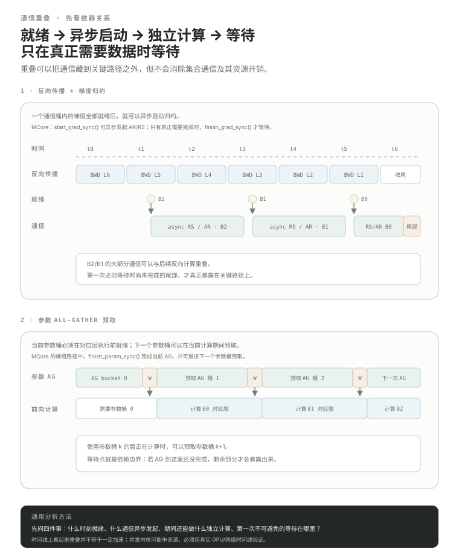

Communication Overlap：真正要找的不是第二条 stream，而是“第一次不得不等”的位置。
前面每加一种并行都会出现通信：DP 有 gradient reduce / parameter gather，TP 有 activation All-Gather / Reduce-Scatter，PP 有 stage P2P，EP 有 token exchange。Overlap 的目标不是把这些 bytes 变没，而是让通信尽早开始、让独立计算继续推进，把真正的 wait 推迟到数据第一次必须被消费的位置。
- 用
READY → async launch → independent compute → WAIT四个事件解释 overlap。 - 区分 collective 自身耗时与真正暴露在 critical path 上的 communication tail。
- 看懂当前 MCore 的
start_grad_sync()/finish_grad_sync()与start_param_sync()/finish_param_sync()生命周期。 - 理解 bucket size 为什么同时控制“多久才能 ready”和“单次 collective 是否足够大”。
- 把同一个方法迁移到 TP AG/RS、PP P2P 与 EP A2A。
- 知道 overlap flag 生效不等于吞吐一定上涨，最终必须用 timeline 与 step time 验证。
所有 overlap 优化先回答四个问题：什么时候 ready？哪里 launch？中间还能算什么？最早在哪里必须 wait？
下面把最典型的两条 DP 路径放到同一个 critical-path 画布里。上半是 backward 时 gradient bucket 的异步 reduce；下半是下一轮 forward 前 parameter bucket 的 all-gather prefetch。

不是“整个 backward 做完才 reduce”，而是一个 bucket 的所有 gradients ready 就能启动。
当前 _ParamAndGradBucketGroup 明确维护每个参数的 gradient-ready 计数；当 overlap_grad_reduce=True 时，一个 bucket group 内所有 gradient 都 ready，就可以 dispatch 对应 all-reduce 或 reduce-scatter。使用 Distributed Optimizer 时是 reduce-scatter，否则是 all-reduce。
backward hook某个 param gradient ready，登记到 bucket group。start_grad_sync()开启 overlap 时异步 dispatch AR/RS；此时 caller 不必立刻等 collective 完成。later backward compute如果不依赖这个 reduced bucket，就继续执行，形成隐藏窗口。finish_grad_sync()在真正需要完成的同步点等待异步 handle；未被计算覆盖的尾巴在这里暴露。start_grad_sync()/finish_grad_sync() 都直接描述了 overlap 模式下的异步 dispatch 与后续 wait。太大的 bucket 启动太晚；太小的 bucket 又可能掉进 latency / launch overhead。
当前 DistributedDataParallelConfig.bucket_size 甚至根据 DP size 给出默认规模逻辑：未指定时 MCore 使用 max(40,000,000, 1,000,000 × dp_size) parameters。源码注释给出的理由就是更大 DP 通常需要更大 bucket，避免 collectives 过度 latency-bound。
所以 bucket 不是纯显存参数。它实际上在调“ready 粒度、消息大小、可隐藏窗口”三者之间的平衡。
Distributed Optimizer 的 parameter all-gather 可以做成“下一桶预取”。
当前 DDP 配置的 overlap_param_gather 文档写得很直接：把 parameter all-gather 与 forward compute 重叠。更具体地，bucket-group 路径会让当前 bucket 的 forward pre-hook 等待自己的 gather，同时在计算开始前 dispatch 下一个 bucket 的 gather——于是“当前层 compute”成为“下一桶 AG”的隐藏窗口。
start_param_sync()overlap_param_gather=True 时可异步发起当前 bucket 所需 all-gather。finish_param_sync()完成当前 bucket；当前实现还能推进 next_param_gather_bucket_group 的预取。forward current bucket参数已经可用；与此同时下一 bucket 的 AG 尽量在后台推进。next pre-hook下一段 forward 真正需要该参数时再等待未完成尾部。DistributedDataParallelConfig.param_sync_via_bucket_group 的源码说明明确描述了：forward pre-hook 等当前 gather，同时 dispatch 下一 bucket 的 gather，从而让下一次通信与当前计算重叠。TP 的 AG/RS 紧贴 Linear 数据流，所以经常需要把 collective 与 GEMM 本身做流水。
DP bucket reduce 往往可以利用后续 layers 的 backward；TP 的 activation collective 则更贴近当前 Linear 的输入/输出依赖。当前 ModelParallelConfig 仍提供 tp_comm_overlap，并细分 tp_comm_bulk_wgrad、tp_comm_bulk_dgrad、tp_comm_overlap_ag、tp_comm_overlap_rs、tp_comm_overlap_rs_dgrad 等控制。
这张小图只表示 pipelining 思路，不等价于某个固定 kernel timeline。真正的 chunk size、bulk vs pipelined path、Transformer Engine 版本和硬件都会改变执行细节。
tp_comm_overlap 文档仍明确写着尽可能将 Linear execution 与 TP AllGather/ReduceScatter overlap。P2P 能否藏起来，取决于 schedule 是否给同一 rank 留出另一个可执行 microbatch。
Pipeline Parallel 的 send/recv 有直接 stage dependency，但 1F1B / VPP 会制造“别的 microbatch 可以算”的窗口。当前 ModelParallelConfig.overlap_p2p_comm 表示部分 P2P communication 可与 compute overlap，并且当前配置明确要求它与 batch_p2p_comm=True 互斥；另有 overlap_p2p_comm_warmup_flush 控制 warmup/flush 阶段。
Expert All-to-All 很重时，Megatron 会主动重排工作，而不是只把 all_to_all 改成 async。
当前 MoE README 把 batch-level A2A overlap 列为正式优化，并给出 --overlap-moe-expert-parallel-comm --delay-wgrad-compute。当前 TransformerConfig 还对这条路径施加明确约束：需要 EP>1、dispatcher 为 alltoall 或 flex、bf16/fp16，并对 full recompute、shared-expert overlap 等组合有限制。
delay_wgrad_compute 的意义可以从依赖图理解：把本来马上要执行的一部分 weight-gradient compute 延后，给 A2A 留出一段能并发的计算工作。它不是“延后就一定快”，而是人为调整 critical path。
--overlap-moe-expert-parallel-comm --delay-wgrad-compute；当前 TransformerConfig 也直接校验这条 overlap path 的 dispatcher、precision 与 recompute 约束。NCCL 与 GEMM 同时出现在 timeline 上，也可能互相拖慢。
Nsight timeline 最重要的不是“蓝绿块有没有重叠”，而是关键依赖处还有多少 tail。
实际分析至少要同时看四件事：collective launch 是否足够早；真正 wait 时还剩多少通信；并发之后 GEMM 本身是否变慢；不同 ranks 的 wait 是否对齐，还是存在 PP/MoE load imbalance。
以后读任何 overlap 优化，都沿“ready → start → independent work → finish”找源码。
param_and_grad_buffer.py看 bucket 何时 ready、AR/RS 何时 dispatch、handle 何时 wait。param_and_grad_buffer.py看 current bucket wait 与 next-bucket prefetch progression。tp_comm_overlap / overlap_p2p_comm先读配置约束，再追 TE Linear 与 pipeline schedules 的实际 launch/wait。overlap_moe_expert_parallel_comm看 A2A 为什么有独立 batch-level compute window，以及哪些配置被禁止组合。main@a3344a6f。这里的 READY / dependency / wait 是稳定心智模型；具体 flag、默认值、文件路径和 backend 约束属于当前实现细节，后续读源码时要重新核对 upstream。if bucket.is_ready():
handle = start_async_comm(bucket) # launch early
run_independent_compute() # hide work here
if consumer_needs(bucket):
handle.wait() # exposed tail lives here
consume(bucket)如果能从 wait 点倒推依赖，你已经掌握了这节课最核心的方法。
start_grad_sync() 调得早，不等于 overlap 已经成功？finish_grad_sync() 处是否仍有明显 wait tail。LLM Inference：训练结束以后，生成一个 token 到底发生什么？